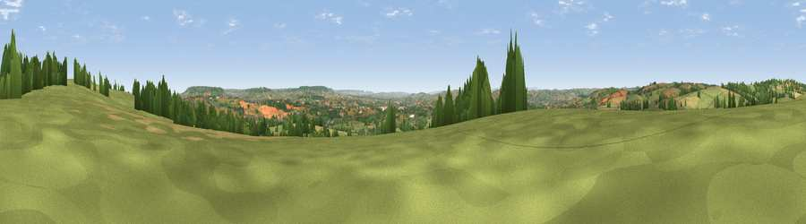

Viewpoint near Uplowman
#14039 in England · top 24% of its area beats it · near UplowmanThe view, rendered

A 360° render of this exact spot computed from the terrain model, tree cover and land cover — summer colours, afternoon light, calibrated against photographs of famous viewpoints. Real trees, hedges and buildings will differ in detail.
The panorama
Grey silhouette: terrain skyline in each direction (720 bearings, Earth curvature and refraction included). Dashed green: skyline with trees (+15 m) and buildings (+8 m) as obstacles. Blue strip: how far the ground is visible on each bearing.
Where the view opens
Wedge length = distance to the farthest visible ground on that bearing (vegetation-aware). Rings at 10, 25 and 50 km.
What fills the view
61% grassland · 21% cropland · 16% woodland · 2% built-up
Angular shares of the visible panorama (visual magnitude), not map area. Landscape diversity 0.44 (0–1 Shannon).
Key numbers
More beautiful places nearby
The staircase of upgrades: each row has a higher view potential than everything closer. Driving times are estimates from straight-line distance, calibrated against real road routing — check an actual route before setting out.
| Place | Direction | Drive | Score |
|---|---|---|---|
| Newmill Hill | NNE · 1 km | ~2 min | 59.6 |
| Viewpoint near Hockworthy | NNE · 4 km | ~9 min | 61.0 |
| Heniton Hill | N · 5 km | ~11 min | 66.6 |
| Viewpoint near Sampford Arundel | E · 9 km | ~17 min | 68.8 |
| Viewpoint near Sampford Arundel | E · 9 km | ~18 min | 72.3 |
| Viewpoint near Wiveliscombe | NNE · 10 km | ~19 min | 75.1 |
| Viewpoint near Bradninch | SSW · 13 km | ~24 min | 77.7 |
| Raddon Hills | SW · 18 km | ~32 min | 78.2 |
50.93817, -3.38296 · source: screening · position refined by local search. Computed location — check access rights before visiting.